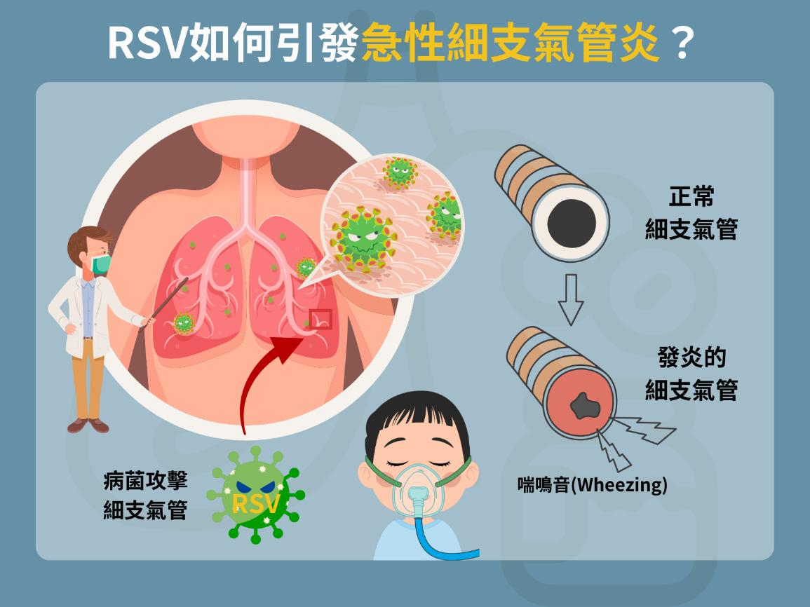
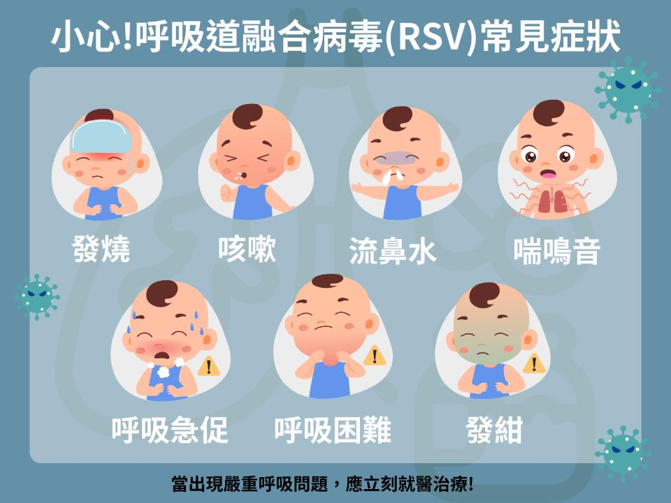
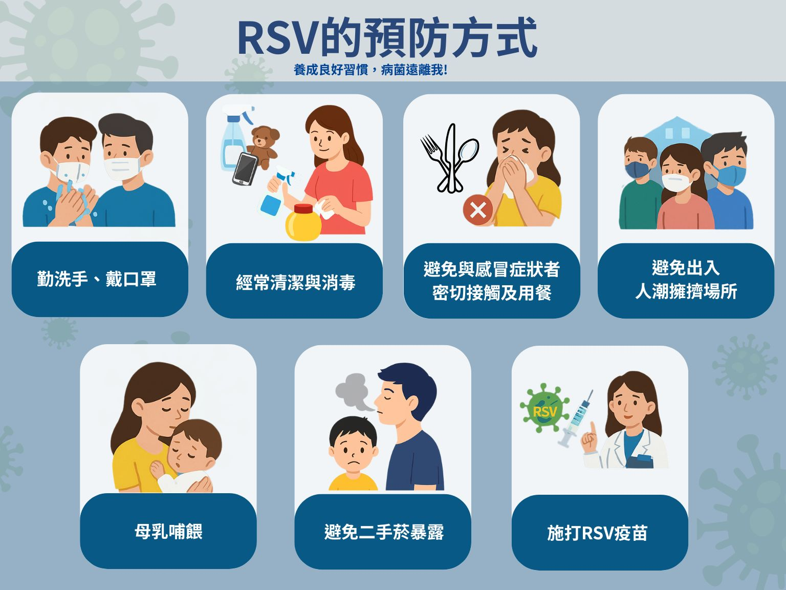

月號－哺乳育嬰站
月號－哺乳育嬰站|
秋冬季節是各種呼吸道疾病好發的時期，呼吸道融合病毒（RSV）是嬰幼兒與老年人嚴重下呼吸道感染的主要原因，其中對嬰幼兒的威脅最為明顯。在台灣，每年超過1,000名嬰幼兒因感染RSV而住院，其中高達九成為兩歲以下的幼童；了解RSV的傳染方式、症狀及預防重點，有助於早期識別與妥善照護，讓孩子與家人都能平安度過這個呼吸道病毒活躍的季節。 |
|
RSV是什麼？呼吸道融合病毒介紹 |
|
呼吸道融合病毒（Respiratory Syncytial Virus，簡稱RSV）是一種常見的呼吸道病毒，RSV是造成嬰幼兒細支氣管炎與肺炎的主要原因之一，在台灣全年皆可能流行。 |
|  |
RSV的傳染途徑 RSV具有高度傳染性，只要感染者咳嗽、打噴嚏或講話，病毒飛沫便可能經由眼、鼻、口進入他人的體內。 病毒可在物體表面存活數小時，若接觸到門把、玩具、毛巾等受污染物品後再觸摸臉部，也可能被感染；RSV的潛伏期約2至8天（平均4至6天），在幼兒園、托嬰中心等密閉環境中特別容易造成群聚感染。 |
|
高風險族群 多數健康兒童感染後會出現類似感冒的症狀，以下族群感染後容易出現重症，要多加注意： 1. 6個月以下嬰兒、早產兒。 |
|
RSV症狀有哪些？大人與小孩有何不同？ RSV的初期症狀與一般感冒相似，包括：發燒、咳嗽、流鼻涕、鼻塞、喉嚨痛 1. 嬰幼兒常見症狀：煩躁哭鬧、食慾下降、呼吸急促、喘鳴音，嚴重時會有發紺、胸凹等呼吸窘迫情形。 |
|  |
|
感染RSV後的治療與照護重點 目前RSV無抗病毒藥物，治療以「支持性照護」為主，目標是減輕症狀、維持呼吸道通暢與防止併發症；若感染嚴重或出現呼吸困難，須立即就醫，住院治療。 1. 充分休息：讓寶寶多休息、減少活動，減輕呼吸道負擔。 |
|
RSV的預防方式 1. 勤洗手、戴口罩，咳嗽或打噴嚏時掩蓋口鼻。 |
|  |
|
病毒雖無法完全避免，但透過日常預防與提升自身免疫力，能有效降低重症與併發症風險。讓我們從生活習慣做起，協助孩子養成勤洗手、戴口罩、規律作息的好習慣，在秋冬呼吸道病毒高峰期，也能為家人多一份健康保障。 |
|
資料來源
1.
RSV症狀是什麼？呼吸道融合病毒多久會好？原因、治療解析 |